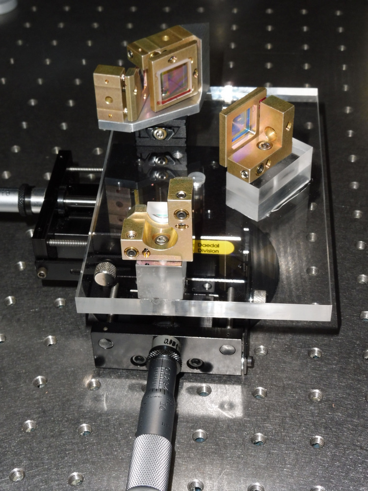

TREACY STRIPPER COMPRESSOR USING TWO HOLOGRAPHIC MIRRORS OF BRAGG NETWORK TRANSMISSION VOLUME AND NOT VARIABLE. he stretching and laser pulse compression operations are conventionally carried out by means of reflection diffraction gratings.
In my case, I use 2 networks said HCBR = Bragg holographic mirror with variable pitch. This type of network has two major advantages which are a higher 4X laser flux resistance (4J / cm 2 @ 100fs) and a higher diffraction which makes it possible to produce very compact compressor-stretcher.
As an example:
a compressor-stretcher Offner 200nm congestion 1.000 m 2 efficiency 60% stretching 20fs / 400ps 10mJ
a stretcher-compressor HCBR 150nm size 0.001 m 2 efficiency 60% stretching 20fs / 600ps 100mJ
The first stretcher-compressor HCBR was realized in 2007

In this type of stretcher-compressor direct diffraction is replaced by a sequence of (transmission without diffraction-reflection-transmission with diffraction) or (transmission with diffraction-reflection-transmission without diffraction).
Despite a variety of solutions for compressor stretchers the TREACY
1969 system will completely dominate laser architectures because of its very high level of damage.
A doctoral thesis from the Ecole Polytechnique of Sébastien LAUX very interesting.